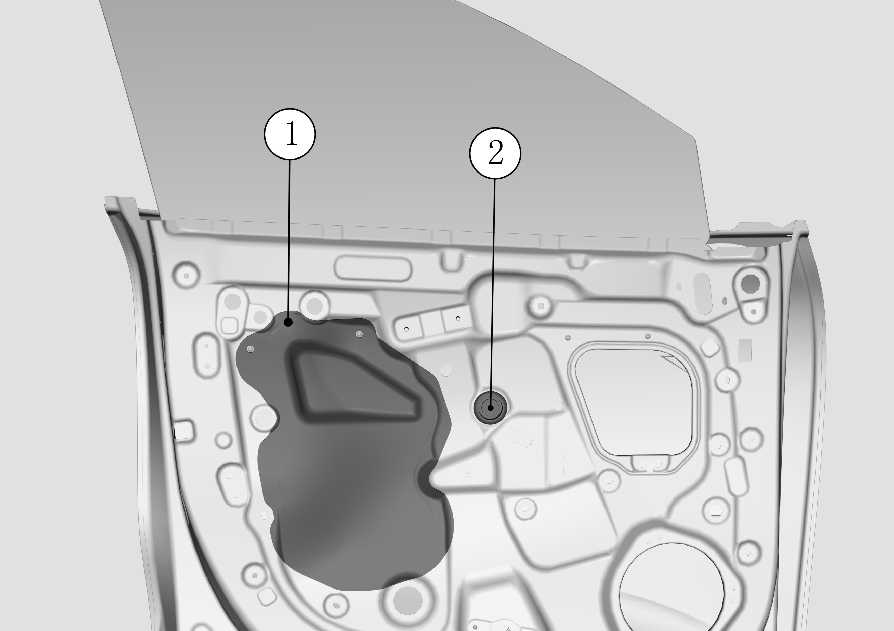
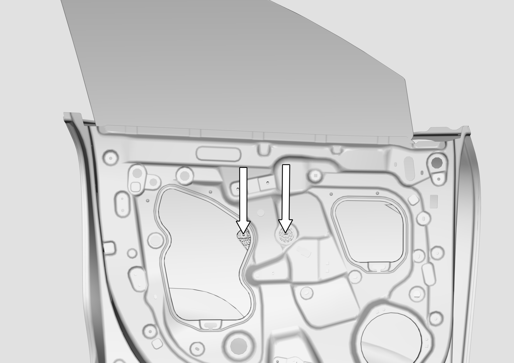
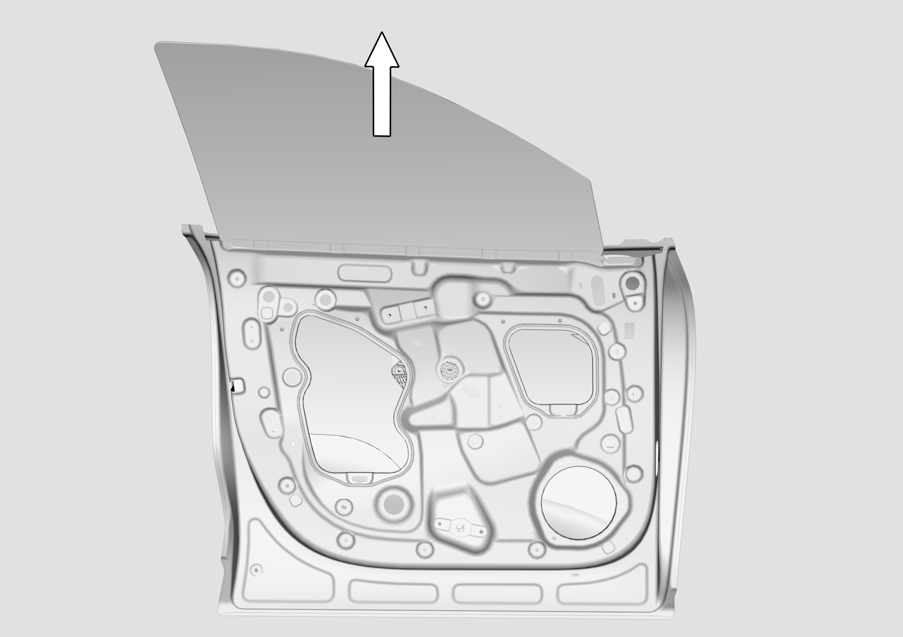

Снятие
Здесь описаны Снятие и Установка стекла левой передней двери, снятие и установка стекла правой передней двери выполняются в целом аналогично.
Снять обивку передней двери Снятие и установка облицовочной панели передней двери
Снять защитную пленку (в месте, указанном номером ①) и водонепроницаемую заглушку технологического отверстия для установки стекла двери (в месте, указанном номером ②).

Через технологическое отверстие видны два крепежных болта стекла передней двери в позициях, указанных стрелками; с помощью торцевой головки № 10 ослабить крепежные болты стекла передней двери. Момент затяжки болтов при установке: 9 ± 1 N.m.

Взявшись за верхнюю часть стекла, извлечь стекло передней двери в направлении стрелки.

Установка
Установка в целом выполняется в обратном порядке. Обратите внимание: после установки стекла необходимо обеспечить перепад по плоскости стекла -1 ± 1.5 mm относительно измерительной базы облицовочной панели стойки B.